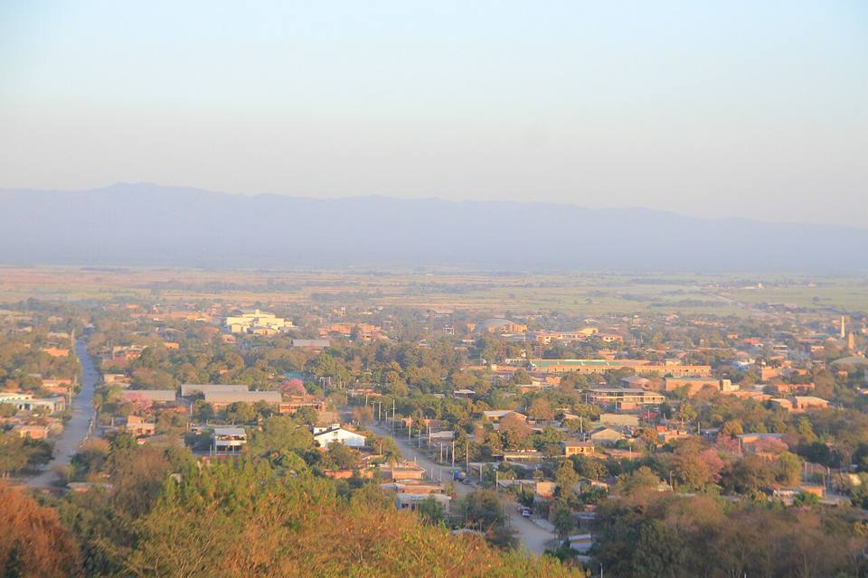
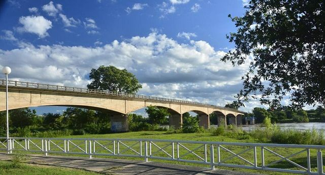
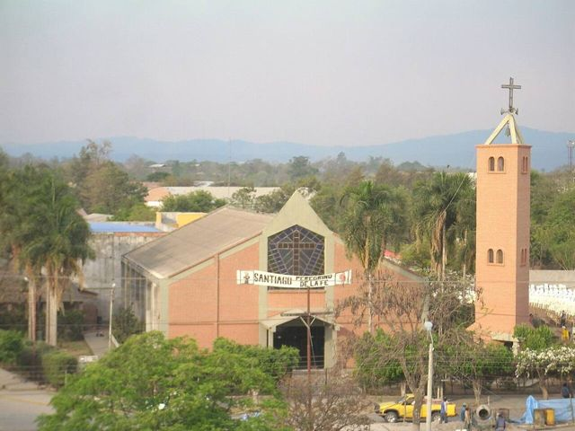
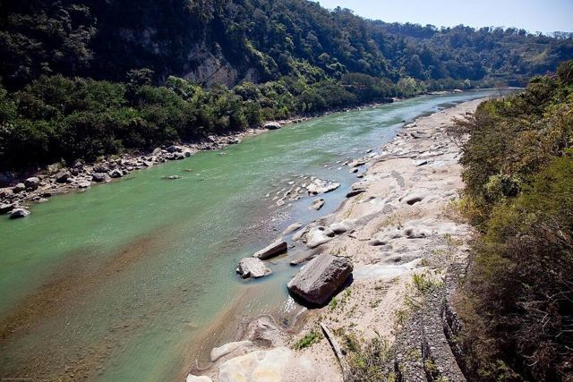
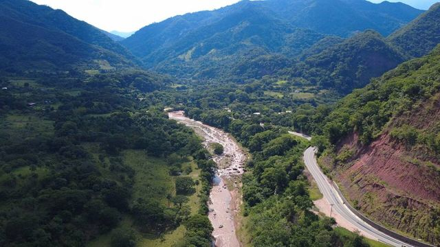
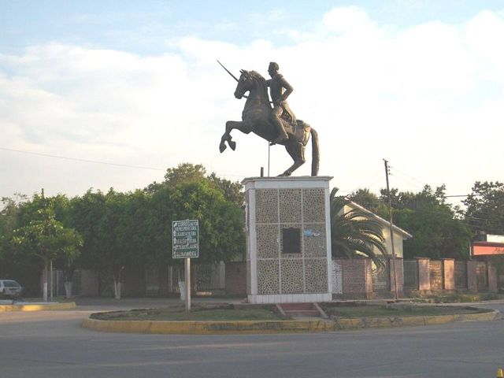

Bermejo
Département de Tarija · Villes

Bermejo est une ville chaude et commerçante, posée au bord de la rivière du même nom, qui fait la frontière avec Aguas Blancas, en Argentine. On la traverse par le pont international ou en petite barque. Pour la plupart des voyageurs, c'est un passage vers le nord de l'Argentine, au bout d'une belle route de montagne depuis Tarija.
415 maltitude
0 à 1 joursur place
À faire
- Traversée du río Bermejo vers Aguas Blancas
- Marchés et rues commerçantes
- Route de montagne depuis Tarija
À goûter
- Poisson de rivièreSurubí, pacú ou dorado grillés, avec manioc et banane frite.
- Fruits tropicauxMangues, ananas, papayes, achachairú (petit fruit acidulé) et jus frais partout pour quelques bolivianos.
Conseil. Climat chaud et humide. Route asphaltée depuis Tarija (environ 4 h).
À découvrir ici
- Frontière Bermejo – Aguas BlancasPar le pont international ou en petite barque sur le río Bermejo. D'Aguas Blancas, bus vers Orán et Salta.
Comment aller à Bermejo
Padcaya Route (bus, voiture) · environ 3 h
Bus Tarija – Bermejo qui passent par Padcaya.
Photos de Bermejo

.jpg){kind=link}



_y_Argentina_(dcha).jpg){kind=link}




Autres lieux de la région
 TarijaLa Bolivie andalouse : vignobles d'altitude, singani et ambiance détendue.
TarijaLa Bolivie andalouse : vignobles d'altitude, singani et ambiance détendue. Valle de la ConcepciónLes caves à vin et à singani de Tarija.
Valle de la ConcepciónLes caves à vin et à singani de Tarija. San LorenzoVillage colonial chapaco, maison du héros Moto Méndez, à 15 km de Tarija.
San LorenzoVillage colonial chapaco, maison du héros Moto Méndez, à 15 km de Tarija. CoimataRivière, piscines naturelles et grande cascade, à 20 minutes de Tarija.
CoimataRivière, piscines naturelles et grande cascade, à 20 minutes de Tarija. Lac de San Jacinto et TomatitasUn lac entre les collines et une rivière pour se baigner, aux portes de Tarija.
Lac de San Jacinto et TomatitasUn lac entre les collines et une rivière pour se baigner, aux portes de Tarija. Padcaya et ChaguayaVillage de vallée au sud de Tarija, et le grand sanctuaire de la Vierge de Chaguaya.
Padcaya et ChaguayaVillage de vallée au sud de Tarija, et le grand sanctuaire de la Vierge de Chaguaya. Réserve de Sama : lagunes de TajzaraLagunes d'altitude, dunes et flamants roses dans la réserve de Sama, au-dessus de Tarija.
Réserve de Sama : lagunes de TajzaraLagunes d'altitude, dunes et flamants roses dans la réserve de Sama, au-dessus de Tarija. Réserve de TariquíaForêts de nuages et rivières sauvages, pour des treks de plusieurs jours avec guide.
Réserve de TariquíaForêts de nuages et rivières sauvages, pour des treks de plusieurs jours avec guide. Camargo (vallée de Cinti)Vieux vignobles et falaises rouges de la vallée de Cinti, entre Potosí et Tarija.
Camargo (vallée de Cinti)Vieux vignobles et falaises rouges de la vallée de Cinti, entre Potosí et Tarija. Villamontes (Gran Chaco)La porte du Gran Chaco, au bord du Pilcomayo et de son canyon, El Angosto.
Villamontes (Gran Chaco)La porte du Gran Chaco, au bord du Pilcomayo et de son canyon, El Angosto. YacuibaLa grande ville frontière du Chaco, face à l'Argentine.
YacuibaLa grande ville frontière du Chaco, face à l'Argentine. CamiriLa « capitale pétrolière » du Chaco, entre collines et culture guarani.
CamiriLa « capitale pétrolière » du Chaco, entre collines et culture guarani.